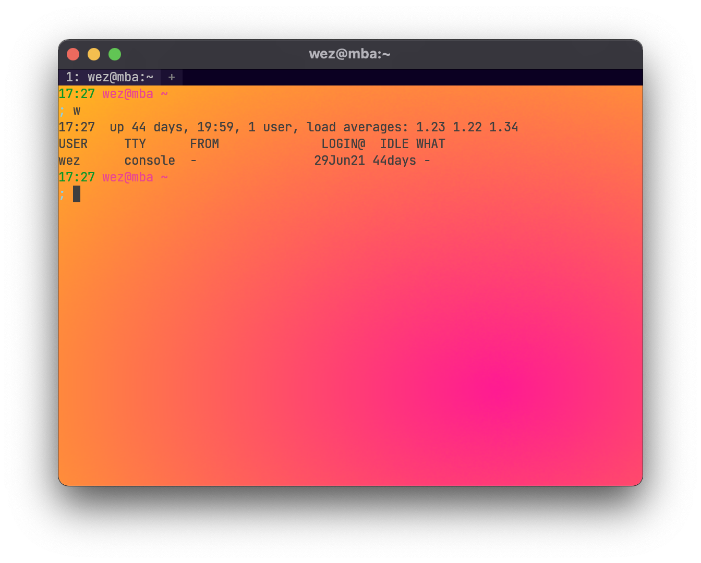

Color Scheme
WezTerm ships with the full set of over 200 color schemes available from iTerm2-Color-Schemes. You can select a color scheme with a line like this:
return {
color_scheme = "Batman",
}
You can find a list of available color schemes and screenshots in The Color Schemes Section.
The color_scheme option takes precedence over the colors section below.
Defining your own colors
Rather than using a color scheme, you can specify the color palette using the
colors configuration section. Note that color_scheme takes precedence
over this section.
You can configure colors with a section like this. In addition to specifying
SVG/CSS3 color names,
you can use #RRGGBB to specify a color code using the
usual hex notation; eg: #000000 is equivalent to black:
return {
colors = {
-- The default text color
foreground = "silver",
-- The default background color
background = "black",
-- Overrides the cell background color when the current cell is occupied by the
-- cursor and the cursor style is set to Block
cursor_bg = "#52ad70",
-- Overrides the text color when the current cell is occupied by the cursor
cursor_fg = "black",
-- Specifies the border color of the cursor when the cursor style is set to Block,
-- of the color of the vertical or horizontal bar when the cursor style is set to
-- Bar or Underline.
cursor_border = "#52ad70",
-- the foreground color of selected text
selection_fg = "black",
-- the background color of selected text
selection_bg = "#fffacd",
-- The color of the scrollbar "thumb"; the portion that represents the current viewport
scrollbar_thumb = "#222222",
-- The color of the split lines between panes
split = "#444444",
ansi = {"black", "maroon", "green", "olive", "navy", "purple", "teal", "silver"},
brights = {"grey", "red", "lime", "yellow", "blue", "fuchsia", "aqua", "white"},
-- Arbitrary colors of the palette in the range from 16 to 255
indexed = {[136] = "#af8700"},
}
}
Defining a Color Scheme in your .wezterm.lua
If you'd like to keep a couple of color schemes handy in your configuration
file, rather than filling out the colors section, place it in a
color_schemes section as shown below; you can then reference it using the
color_scheme setting.
Color schemes names that you define in your wezterm.lua take precedence
over all other color schemes.
All of the settings available from the colors section are available
to use in the color_schemes sections.
return {
color_scheme = "Red Scheme",
color_schemes = {
["Red Scheme"] = {
background = "red",
}
["Blue Scheme"] = {
background = "blue",
}
},
}
Defining a Color Scheme in a separate file
If you'd like to factor your color schemes out into separate files, you
can create a file with a [colors] section; take a look at one of
the available color schemes for an example.
It is recommended that you place your custom scheme in a directory
named $HOME/.config/wezterm/colors if you're on a POSIX system.
On a Windows system, wezterm will search for schemes in a directory
named colors that is in the same directory as the wezterm.exe.
If you wish to place your color scheme files in some other location, then you
will need to instruct wezterm where to look for your scheme files; the
color_scheme_dirs setting specifies a list of directories to be searched:
return {
color_scheme_dirs = {"/some/path/to/my/color/schemes"},
}
Color scheme names that are defined in files in your color_scheme_dirs list
take precedence over the built-in color schemes.
Dynamic Color Escape Sequences
Wezterm supports dynamically changing its color palette via escape sequences.
The dynamic-colors directory of the color scheme repo contains shell scripts that can change the color scheme immediately on the fly. This can be used in your own scripts to alter the terminal appearance programmatically:
$ git clone https://github.com/mbadolato/iTerm2-Color-Schemes.git
$ cd iTerm2-Color-Schemes/dynamic-colors
$ for scheme in *.sh ; do ; echo $scheme ; \
bash "$scheme" ; ../tools/screenshotTable.sh; sleep 0.5; done
Tab Bar Appearance & Colors
The following options control the appearance of the tab bar:
return {
-- set to false to disable the tab bar completely
enable_tab_bar = true,
-- set to true to hide the tab bar when there is only
-- a single tab in the window
hide_tab_bar_if_only_one_tab = false,
colors = {
tab_bar = {
-- The color of the strip that goes along the top of the window
background = "#0b0022",
-- The active tab is the one that has focus in the window
active_tab = {
-- The color of the background area for the tab
bg_color = "#2b2042",
-- The color of the text for the tab
fg_color = "#c0c0c0",
-- Specify whether you want "Half", "Normal" or "Bold" intensity for the
-- label shown for this tab.
-- The default is "Normal"
intensity = "Normal",
-- Specify whether you want "None", "Single" or "Double" underline for
-- label shown for this tab.
-- The default is "None"
underline = "None",
-- Specify whether you want the text to be italic (true) or not (false)
-- for this tab. The default is false.
italic = false,
-- Specify whether you want the text to be rendered with strikethrough (true)
-- or not for this tab. The default is false.
strikethrough = false,
},
-- Inactive tabs are the tabs that do not have focus
inactive_tab = {
bg_color = "#1b1032",
fg_color = "#808080",
-- The same options that were listed under the `active_tab` section above
-- can also be used for `inactive_tab`.
},
-- You can configure some alternate styling when the mouse pointer
-- moves over inactive tabs
inactive_tab_hover = {
bg_color = "#3b3052",
fg_color = "#909090",
italic = true,
-- The same options that were listed under the `active_tab` section above
-- can also be used for `inactive_tab_hover`.
},
-- The new tab button that let you create new tabs
new_tab = {
bg_color = "#1b1032",
fg_color = "#808080",
-- The same options that were listed under the `active_tab` section above
-- can also be used for `new_tab`.
},
-- You can configure some alternate styling when the mouse pointer
-- moves over the new tab button
new_tab_hover = {
bg_color = "#3b3052",
fg_color = "#909090",
italic = true,
-- The same options that were listed under the `active_tab` section above
-- can also be used for `new_tab_hover`.
}
}
}
}
Window Padding
You may add padding around the edges of the terminal area.
See the window_padding docs for more info
Styling Inactive Panes
since: 20201031-154415-9614e117
To make it easier to see which pane is active, the inactive panes are dimmed and de-saturated slightly.
You can specify your own transformation to the pane colors with a hue, saturation, brightness (HSB) multipler.
In this example, inactive panes will be slightly de-saturated and dimmed; this is the default configuration:
return {
inactive_pane_hsb = {
saturation = 0.9,
brightness = 0.8,
}
}
The transform works by converting the RGB colors to HSV values and
then multiplying the HSV by the numbers specified in inactive_pane_hsb.
Modifying the hue changes the hue of the color by rotating it through the color wheel. It is not as useful as the other components, but is available "for free" as part of the colorspace conversion.
Modifying the saturation can add or reduce the amount of "colorfulness". Making the value smaller can make it appear more washed out.
Modifying the brightness can be used to dim or increase the perceived amount of light.
The range of these values is 0.0 and up; they are used to multiply the existing values, so the default of 1.0 preserves the existing component, whilst 0.5 will reduce it by half, and 2.0 will double the value.
Window Background Image

since: 20201031-154415-9614e117
You can attach an image to the background of the wezterm window:
return {
window_background_image = "/path/to/wallpaper.jpg"
}
If the path is a relative path then it will be expanded relative
to the directory containing your wezterm.lua config file.
PNG, JPEG, GIF, BMP, ICO, TIFF, PNM, DDS, TGA and farbfeld files can be loaded. Animated GIF and PNG files will animate while the window has focus.
The image will be scaled to fit the window contents. Very large images may decrease render performance and take up VRAM from the GPU, so you may wish to resize the image file before using it.
You can optionally transform the background image by specifying a hue, saturation, brightness multiplier:
return {
window_background_image = "/path/to/wallpaper.jpg",
window_background_image_hsb = {
-- Darken the background image by reducing it to 1/3rd
brightness = 0.3,
-- You can adjust the hue by scaling its value.
-- a multiplier of 1.0 leaves the value unchanged.
hue = 1.0,
-- You can adjust the saturation also.
saturation = 1.0,
},
}
See Styling Inactive Panes for more information on hue, saturation, brigthness transformations.
Window Background Gradient
Since: 20210814-124438-54e29167
See window_background_gradient for configuration information on gradients.
Window Background Opacity
since: 20201031-154415-9614e117
If your Operating System provides Compositing support then WezTerm is able to specify the alpha channel value for the background content, rendering the window background translucent (some refer to this as transparent rather than translucent) and causing the windows/desktop behind it to show through the window.
macOS, Windows and Wayland support compositing out of the box. X11 may require installing or configuring a compositing window manager. XWayland under Mutter/Wayland also works without any additional configuration.
window_background_opacity specifies the alpha channel value
with floating point numbers in the range 0.0 (meaning completely
translucent/transparent) through to 1.0 (meaning completely opaque).
Setting this to a value other than the default 1.0 may impact render
performance.
return {
window_background_opacity = 1.0,
}
Text Background Opacity
since: 20201031-154415-9614e117
When using a background image or background opacity, the image content can have relatively low contrast with respect to the text you are trying to read in your terminal.
The text_background_opacity setting specifies the alpha channel value to use
for the background color of cells other than the default background color.
The default for this setting is 1.0, which means that the background
color is fully opaque.
The range of values permitted are 0.0 (completely translucent)
through to 1.0 (completely opaque).
return {
text_background_opacity = 0.3,
}